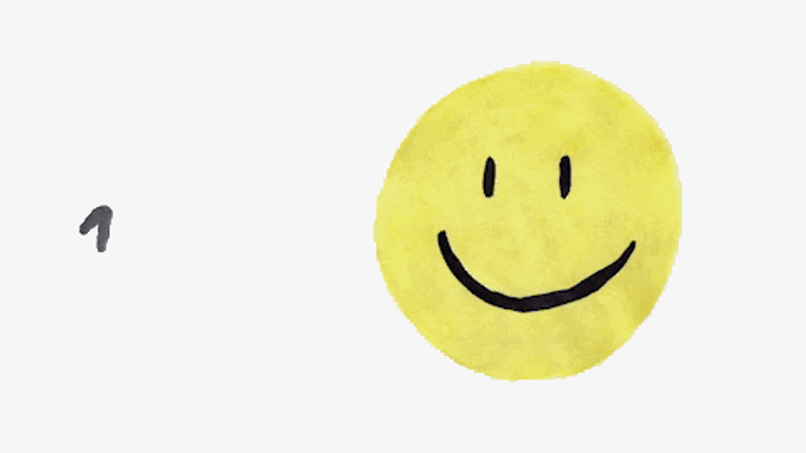

Dnešní den byl vyplněn basketbalem a kodováním. Můj syn měl na programu zápas v basketbalu, takže jsem se k webu dostala později odpoledne. Ale vzdělání nikdy nepozná žádné časové limity, že?
V dnešním učení jsem se zaměřila na ovládnutí ordered a unordered listů, atributů anchor elementů, hyperlinků a manipulaci s obrázky a soubory cest z rozdílných zdrojových složek. Po dnešku dokážu úspěšně odkazovat na kontakty a obrázky lokalizované v odlišných podsložkách mého webu.
Ano, dnešní den byl hodně náročný, ale s každou novou naučenou dovedností se cítím víc a více odhodlána pokračovat. Velké projekty vyžadují čas, trpělivost a hodně dřiny. Začínám to cítit na vlastní kůži!
Musím se odměnit hezkým motivujícím obrázkem.
 Podívej se, kde jsi byla včera